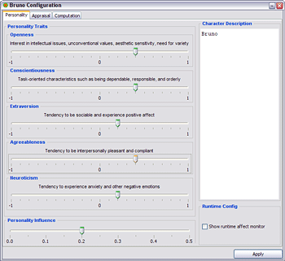
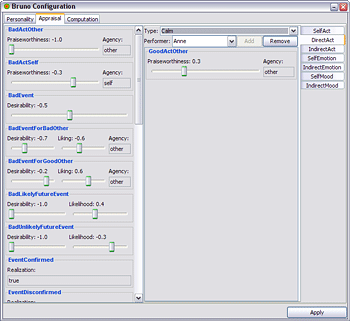
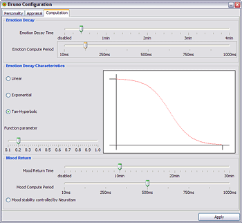

The configuration of characters and groups can be done by editing an ALMA
character definition AML file (e.g. conf/CharacterDefinition.aml) with a common
text editor. Also, this can be done with the CharacterBuilder tool. Therefore,
select the character or the group which has to be configured by the menu. If
there is no character, create a new character.
In this section the configuration of the parameters relevant for the affect
computation of characters are described. The configuration of groups is somehow
similar, but lacks the definition of a personality. For the definition of a
group at least 2 characters have to be created.
Personality
For the affect computation in ALMA, the personality of a character has to be
defined by selecting a value for 5 personality traits: openness,
conscientiousness, extraversion, agreeableness, and neuroticism. Negative values
represent a weak characteristic; whereas positive values represent a strong
characteristic. In the ALMA affect computation the personality values are used
as predefined static knowledge.

The personality trait values influence the definition of a character's default
mood and the intensity bias for emotions. The influence can be observed online
via the Affect Monitor.
The personality configuration window shows 3 other parameters:
Personality Influence (below the personality traits). The higher this value,
the more the personality influence the emotion's intensity bias. The default
value is 0.2.
Character Description (on the right side). An informal description of a
character can be given in a separate text area.
Runtime Configuration (right, down). If Show runtime affect monitor is
selected, an Affect Monitor window for the
character will be displayed during runtime.
Changes are available instantly. Important: To keep the changes permanently, press the Apply-Button and
save them via the
File-Save-Character Specification menu.
Appraisal
The computation of mood relies on the elicitation of emotions. In ALMA emotions
are the result of a cognitive appraisal of a situation. The emotion elicitation
and their intensity computation are based on an extended approach of the OCC
emotion and appraisal theory. In order to simplify the emotion elicitation
process, a basic appraisal language has been developed. Appraisal Tags are
shortcuts to OCC variables of emotion eliciting conditions. The appraisal of
dialog contributions, can be done with dialog act based appraisal language using
Dialog Act Tags. Both, can be configured in a character' Appraisal
window.

Appraisal Tags
In general, there are 18 appraisal tags a character can use to
appraise a situation from its individual point of view. Based on this appraisal
emotions are generated according to the OCC emotion model:
GoodEvent
GoodEventForGoodOther
GoodEventForGoodOther
BadEvent
BadEventForGoodOther
BadEventForBadOther
GoodLikelyFutureEvent
GoodUnlikelyFutureEvent
BadLikelyFutureEvent
BadUnlikelyFutureEvent
EventConfirmed
EventDisconfirmed
GoodActSelf
GoodActOther
BadActSelf
BadActOther
NiceThing
NastyThing
By these tags and their combination all
24 types of emotion of the OCC model can
be elicited.
On the left side of the Appraisal window, a character's individual
appraisal schema can be defined. Below each appraisal tag, the corresponding
OCC variables and values are shown. The values can be changed by a slider.
This allows, that a character appraises e.g. a BadActOther less
intensive than another character.
Changes are available after restarting ALMA. Important: To keep the changes permanently, press the Apply-Button and
save them via the
File-Save-Character Specification menu.
Dialog Act Appraisal
Emotions can be elicited by utterances. ALMA provides an interface that allows
elicit/compute emotions by dialog acts - the intentional content of an
utterance. Before this can be done, the allowed
dialog acts have to be specified.
The definition of the Dialog Act appraisal rule depends of the character's role
in a dialog. In general, 3 roles are distinguished. Related acts are stored in
different tabs (see right side):
Speaker. Related acts are marked as SelfActs
Addressee. Related acts are marked as DirectActs
Hearer. Related acts are marked as IndirectActs
For each role, a different appraisal rule has to be defined (if needed!).
First, select the role/act category (e.g. SelfActs) on the right
side of the window.
By the pop-down menu in the middle, the dialog act can be selected. Choose the
desired one and create an empty appraisal rule by pressing the Add-button.
Now, the Dialog Act has to be appraised with an Appraisal Tag. Therefore, drag
a tag from the left side into the appraisal rule body in the middle of the
window. Additional tags can be dragged too! Remember to every combination of
tags is reasonable. This overview shows
the valid combinations of tags.
Changes are available after restarting ALMA. Important: To keep the changes permanently, press the Apply-Button and
save them via the
File-Save-Character Specification menu.
Affect Computation
The computation of emotions and mood in ALMA is highly adjustable. The emotion
decay time and function, as well as the computation update interval can be
selected. For the mood computation, the return time to the default mood and the computation update interval can be selected. Important: Selecting a short (e.g. 10ms) computation update interval will lead
to a higher computational load!

For the emotion computation, a simulation panel visualizes the current
parameters by a decay graph.
Changes are available after pressing the Apply-Button. Important: To keep the changes permanently, press the Apply-Button and
save them via the File-Save-Character Specification menu. ALMA Help - Version 1.3 -
07.05.2008 Author: Patrick Gebhard